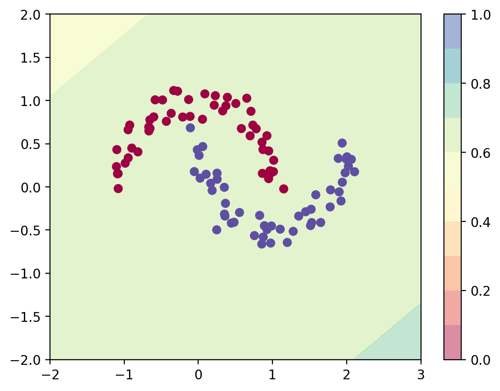

import numpy as np
import sklearn
import torch
import torch.nn as nn
import torch.nn.functional as F
import matplotlib.pyplot as plt
from latexify import *
%matplotlib inline
%config InlineBackend.figure_format = 'retina'Logistic Regression Torch
ML
class LogisticRegression(nn.Module):
def __init__(self, input_dim):
super(LogisticRegression, self).__init__()
self.linear = nn.Linear(input_dim, 1)
def forward(self, x):
logits = self.linear(x)
return logitsfrom sklearn.datasets import make_moonsX, y = make_moons(n_samples=100, noise=0.1)plt.scatter(X[:, 0], X[:, 1], c=y, cmap=plt.cm.Spectral)
log_reg = LogisticRegression(2)# Predict with the model
def predict_plot_grid(model):
XX, YY = torch.meshgrid(torch.linspace(-2, 3, 100), torch.linspace(-2, 2, 100))
X_grid = torch.cat([XX.unsqueeze(-1), YY.unsqueeze(-1)], dim=-1)
logits = model(X_grid)
probs = torch.sigmoid(logits).reshape(100, 100)
plt.contourf(XX, YY, probs.detach().numpy(), levels=[0.0, 0.1, 0.2,0.3, 0.4,0.5, 0.6,0.7, 0.8,0.9, 1.0],
cmap=plt.cm.Spectral, alpha=0.5)
plt.colorbar()
plt.scatter(X[:, 0], X[:, 1], c=y, cmap=plt.cm.Spectral)
predict_plot_grid(log_reg)

opt = torch.optim.Adam(log_reg.parameters(), lr=0.01)
converged = False
prev_loss = 1e8
i = 0
while not converged:
opt.zero_grad()
logits = log_reg(torch.tensor(X, dtype=torch.float32))
loss = nn.BCEWithLogitsLoss()(logits, torch.tensor(y, dtype=torch.float32).view(-1, 1))
loss.backward()
opt.step()
if i%10==0:
print(i, loss.item())
if np.abs(prev_loss - loss.item()) < 1e-5:
converged = True
prev_loss = loss.item()
i = i + 10 0.7104504108428955
10 0.6601136922836304
20 0.6153445243835449
30 0.576545000076294
40 0.5435934662818909
50 0.5159685015678406
60 0.4929444193840027
70 0.47375598549842834
80 0.45769837498664856
90 0.4441695511341095
100 0.4326764643192291
110 0.4228237569332123
120 0.41429755091667175
130 0.4068489968776703
140 0.40028053522109985
150 0.3944348096847534
160 0.389186292886734
170 0.38443419337272644
180 0.38009756803512573
190 0.3761110305786133
200 0.3724215626716614
210 0.36898621916770935
220 0.3657699525356293
230 0.36274418234825134
240 0.359885573387146
250 0.35717469453811646
260 0.3545958995819092
270 0.35213592648506165
280 0.3497839868068695
290 0.34753093123435974
300 0.3453693091869354
310 0.34329262375831604
320 0.34129542112350464
330 0.3393731713294983
340 0.3375217318534851
350 0.3357376456260681
360 0.33401787281036377
370 0.33235955238342285
380 0.33076024055480957
390 0.3292176127433777
400 0.32772961258888245
410 0.3262942135334015
420 0.3249095678329468
430 0.32357391715049744
440 0.3222854733467102
450 0.3210427761077881
460 0.31984415650367737
470 0.31868815422058105
480 0.31757330894470215
490 0.31649816036224365
500 0.3154613673686981
510 0.31446152925491333
520 0.3134974241256714
530 0.312567800283432
540 0.3116713762283325
550 0.3108069896697998
560 0.30997350811958313
570 0.30916985869407654
580 0.3083949089050293
590 0.30764761567115784
600 0.30692702531814575
610 0.30623215436935425
620 0.30556201934814453
630 0.30491578578948975
640 0.30429261922836304
650 0.303691565990448
660 0.3031119108200073
670 0.3025527894496918
680 0.3020135760307312
690 0.30149340629577637
700 0.3009917140007019
710 0.3005077838897705
720 0.30004096031188965
730 0.2995905578136444
740 0.29915615916252136
750 0.2987369894981384
760 0.2983326315879822
770 0.29794251918792725
780 0.29756611585617065
790 0.2972029447555542
800 0.29685255885124207
810 0.29651448130607605
820 0.29618826508522034
830 0.2958735227584839
840 0.2955698072910309
850 0.2952767312526703
860 0.29499390721321106
870 0.2947210371494293
880 0.29445770382881165
890 0.29420363903045654
900 0.293958455324173
910 0.29372185468673706
920 0.2934935688972473
930 0.29327327013015747
940 0.29306069016456604
950 0.29285556077957153
960 0.29265761375427246
970 0.2924666702747345
980 0.2922824025154114
990 0.2921046018600464
1000 0.2919330596923828
1010 0.29176756739616394
1020 0.29160788655281067
1030 0.29145386815071106
1040 0.29130518436431885
1050 0.2911618649959564
1060 0.2910235524177551
1070 0.2908901572227478
1080 0.29076144099235535
1090 0.2906373143196106
1100 0.2905176281929016
1110 0.2904021739959717
1120 0.29029083251953125
1130 0.2901834547519684
1140 0.29007992148399353predict_plot_grid(log_reg)
# Iris dataset
from sklearn.datasets import load_iris
iris = load_iris()X = iris.data
y = iris.targetplt.scatter(X[:, 0], X[:, 1], c=y, cmap=plt.cm.Spectral)
plt.xlabel('Sepal length')
plt.ylabel('Sepal width')Text(0, 0.5, 'Sepal width')
class ThreeClassLogisticRegression(nn.Module):
def __init__(self, input_dim):
super(ThreeClassLogisticRegression, self).__init__()
self.linear1 = nn.Linear(input_dim, 1)
self.linear2 = nn.Linear(input_dim, 1)
self.linear3 = nn.Linear(input_dim, 1)
def forward(self, x):
logits1 = self.linear1(x)
logits2 = self.linear2(x)
logits3 = self.linear3(x)
return torch.cat([logits1, logits2, logits3], dim=-1)
class MultiClassLogisticRegression(nn.Module):
def __init__(self, input_dim, num_classes):
super(MultiClassLogisticRegression, self).__init__()
self.linear = nn.Linear(input_dim, num_classes)
def forward(self, x):
logits = self.linear(x)
return logitsmlr = ThreeClassLogisticRegression(2)X_tensor = torch.tensor(X, dtype=torch.float32)[:,:2]
y_tensor = torch.tensor(y, dtype=torch.long)mlr(X_tensor).shapetorch.Size([150, 3])mlr_efficient = MultiClassLogisticRegression(2, 3)
mlr_efficient(X_tensor).shapetorch.Size([150, 3])mlr_efficient(X_tensor[:5])tensor([[ 1.6853, 5.9457, -0.9022],
[ 1.8023, 5.4911, -0.9884],
[ 1.6162, 5.4920, -0.8269],
[ 1.6097, 5.3623, -0.8170],
[ 1.5923, 5.9462, -0.8215]], grad_fn=<AddmmBackward0>)
nn.Softmax(dim=-1)(mlr_efficient(X_tensor[:5])).sum(dim=-1)tensor([1.0000, 1.0000, 1.0000, 1.0000, 1.0000], grad_fn=<SumBackward1>)def plot_most_probable_class(model):
XX, YY = torch.meshgrid(torch.linspace(4, 8, 100), torch.linspace(1.5, 4.5, 100))
X_grid = torch.cat([XX.unsqueeze(-1), YY.unsqueeze(-1)], dim=-1)
logits = model(X_grid)
predicted_class = torch.argmax(logits, dim=-1)
plt.contourf(XX, YY, predicted_class.reshape(100, 100).detach().numpy(), levels=[-0.5, 0.5, 1.5, 2.5],
cmap=plt.cm.Spectral, alpha=0.5)
plt.colorbar()
plt.scatter(X[:, 0], X[:, 1], c=y, cmap=plt.cm.Spectral)
plot_most_probable_class(mlr_efficient)
logits = mlr_efficient(X_tensor)
nn.Softmax(dim=-1)(logits[:5])tensor([[0.0139, 0.9850, 0.0010],
[0.0244, 0.9742, 0.0015],
[0.0203, 0.9780, 0.0018],
[0.0229, 0.9751, 0.0020],
[0.0127, 0.9862, 0.0011]], grad_fn=<SoftmaxBackward0>)opt = torch.optim.Adam(mlr_efficient.parameters(), lr=0.01)
converged = False
prev_loss = 1e8
i = 0
while not converged:
opt.zero_grad()
logits = mlr_efficient(X_tensor)
loss = F.cross_entropy(logits, y_tensor)
loss.backward()
opt.step()
if i%10==0:
print(i, loss.item())
if np.abs(prev_loss - loss.item()) < 1e-5:
converged = True
prev_loss = loss.item()
i = i + 10 4.188741683959961
10 2.9877233505249023
20 2.2360727787017822
30 1.7865716218948364
40 1.429468035697937
50 1.3531132936477661
60 1.3468083143234253
70 1.3115711212158203
80 1.289126992225647
90 1.267372488975525
100 1.2450817823410034
110 1.222923755645752
120 1.2007617950439453
130 1.178642988204956
140 1.1566882133483887
150 1.1349910497665405
160 1.1136341094970703
170 1.0926913022994995
180 1.0722216367721558
190 1.0522767305374146
200 1.0328959226608276
210 1.014109492301941
220 0.9959387183189392
230 0.9783971309661865
240 0.9614909887313843
250 0.9452206492424011
260 0.9295811057090759
270 0.9145632982254028
280 0.9001539945602417
290 0.8863378167152405
300 0.8730966448783875
310 0.860410749912262
320 0.8482595086097717
330 0.8366215229034424
340 0.8254750370979309
350 0.8147982358932495
360 0.8045694828033447
370 0.7947672605514526
380 0.7853711247444153
390 0.7763609290122986
400 0.767717182636261
410 0.7594213485717773
420 0.7514556646347046
430 0.743803083896637
440 0.7364473938941956
450 0.7293732166290283
460 0.7225661873817444
470 0.7160122990608215
480 0.7096987366676331
490 0.7036131024360657
500 0.6977436542510986
510 0.6920798420906067
520 0.686610758304596
530 0.681327223777771
540 0.6762197017669678
550 0.6712797284126282
560 0.6664990186691284
570 0.661870002746582
580 0.657385528087616
590 0.6530384421348572
600 0.6488226652145386
610 0.644731879234314
620 0.640760600566864
630 0.6369032263755798
640 0.6331548094749451
650 0.6295103430747986
660 0.625965416431427
670 0.6225156784057617
680 0.6191571354866028
690 0.6158859729766846
700 0.6126983165740967
710 0.6095909476280212
720 0.606560468673706
730 0.6036038994789124
740 0.6007182598114014
750 0.5979006290435791
760 0.5951485633850098
770 0.5924595594406128
780 0.5898311138153076
790 0.5872609615325928
800 0.5847470760345459
810 0.5822873711585999
820 0.5798798203468323
830 0.5775225758552551
840 0.5752139687538147
850 0.5729522705078125
860 0.5707358717918396
870 0.5685632824897766
880 0.5664330124855042
890 0.5643435716629028
900 0.5622938275337219
910 0.5602824687957764
920 0.5583080649375916
930 0.5563696026802063
940 0.5544660687446594
950 0.5525962710380554
960 0.5507593750953674
970 0.5489541292190552
980 0.5471798777580261
990 0.5454354286193848
1000 0.5437201857566833
1010 0.5420332551002502
1020 0.5403738617897034
1030 0.5387411713600159
1040 0.5371345281600952
1050 0.5355531573295593
1060 0.5339965224266052
1070 0.532463788986206
1080 0.5309545993804932
1090 0.5294680595397949
1100 0.5280039310455322
1110 0.5265612602233887
1120 0.5251399874687195
1130 0.523739218711853
1140 0.5223585963249207
1150 0.5209976434707642
1160 0.5196559429168701
1170 0.5183329582214355
1180 0.5170283913612366
1190 0.5157417058944702
1200 0.5144726037979126
1210 0.5132205486297607
1220 0.5119854211807251
1230 0.5107666254043579
1240 0.5095639824867249
1250 0.5083770155906677
1260 0.5072055459022522
1270 0.5060491561889648
1280 0.5049075484275818
1290 0.5037805438041687
1300 0.5026676654815674
1310 0.5015687346458435
1320 0.5004835724830627
1330 0.49941182136535645
1340 0.4983532130718231
1350 0.49730753898620605
1360 0.49627456068992615
1370 0.4952540695667267
1380 0.4942457973957062
1390 0.4932496249675751
1400 0.4922652542591095
1410 0.4912925064563751
1420 0.49033111333847046
1430 0.48938095569610596
1440 0.48844197392463684
1450 0.4875137209892273
1460 0.4865962266921997
1470 0.4856891930103302
1480 0.48479247093200684
1490 0.48390600085258484
1500 0.48302942514419556
1510 0.4821627736091614
1520 0.4813058078289032
1530 0.4804583787918091
1540 0.4796203672885895
1550 0.47879165410995483
1560 0.4779721200466156
1570 0.4771614968776703
1580 0.4763597249984741
1590 0.4755668044090271
1600 0.47478240728378296
1610 0.4740065634250641
1620 0.4732390344142914
1630 0.47247982025146484
1640 0.47172871232032776
1650 0.4709855616092682
1660 0.4702503979206085
1670 0.4695231020450592
1680 0.4688034653663635
1690 0.4680914282798767
1700 0.4673868715763092
1710 0.4666897654533386
1720 0.465999960899353
1730 0.46531733870506287
1740 0.46464183926582336
1750 0.46397340297698975
1760 0.4633117616176605
1770 0.4626571238040924
1780 0.4620092213153839
1790 0.4613679051399231
1800 0.4607333242893219
1810 0.46010518074035645
1820 0.45948338508605957
1830 0.4588681161403656
1840 0.4582590162754059
1850 0.45765620470046997
1860 0.45705941319465637
1870 0.45646876096725464
1880 0.4558839797973633
1890 0.45530521869659424
1900 0.454732209444046
1910 0.4541650414466858
1920 0.45360350608825684
1930 0.4530476927757263
1940 0.4524973928928375
1950 0.45195260643959045
1960 0.4514133334159851
1970 0.45087936520576477
1980 0.45035070180892944
1990 0.44982731342315674
2000 0.4493091404438019
2010 0.44879603385925293
2020 0.4482881724834442
2030 0.4477851986885071
2040 0.4472872018814087
2050 0.4467941224575043
2060 0.4463059604167938
2070 0.44582244753837585
2080 0.4453437924385071
2090 0.44486984610557556
2100 0.44440048933029175
2110 0.4439358115196228
2120 0.44347554445266724
2130 0.44301992654800415
2140 0.4425686001777649
2150 0.4421217441558838
2160 0.4416791796684265
2170 0.44124093651771545
2180 0.4408069849014282
2190 0.44037723541259766
2200 0.4399515688419342
2210 0.4395301342010498
2220 0.43911269307136536
2230 0.43869924545288086
2240 0.43828973174095154
2250 0.43788427114486694
2260 0.43748265504837036
2270 0.4370849132537842
2280 0.4366909861564636
2290 0.43630075454711914
2300 0.43591436743736267
2310 0.4355315566062927
2320 0.43515244126319885
2330 0.4347769021987915
2340 0.43440499901771545
2350 0.4340366721153259
2360 0.4336716830730438
2370 0.43331030011177063
2380 0.43295228481292725
2390 0.4325976073741913
2400 0.43224629759788513
2410 0.4318983554840088
2420 0.43155360221862793
2430 0.43121209740638733
2440 0.43087393045425415
2450 0.4305388331413269
2460 0.4302068054676056
2470 0.42987802624702454
2480 0.42955225706100464
2490 0.4292294681072235
2500 0.4289097487926483
2510 0.4285929799079895
2520 0.42827916145324707
2530 0.42796820402145386
2540 0.4276602566242218
2550 0.4273550510406494
2560 0.42705267667770386
2570 0.42675304412841797
2580 0.42645618319511414
2590 0.42616215348243713
2600 0.4258706867694855
2610 0.4255819618701935
2620 0.4252958297729492
2630 0.4250123202800751
2640 0.42473143339157104
2650 0.42445313930511475
2660 0.42417725920677185
2670 0.4239039421081543
2680 0.42363303899765015
2690 0.42336463928222656
2700 0.4230985939502716
2710 0.42283502221107483
2720 0.4225737750530243
2730 0.42231491208076477
2740 0.4220582842826843
2750 0.4218040108680725
2760 0.42155200242996216
2770 0.4213021993637085
2780 0.4210546016693115
2790 0.42080923914909363
2800 0.42056599259376526
2810 0.4203248918056488
2820 0.42008599638938904
2830 0.41984909772872925
2840 0.419614315032959
2850 0.41938158869743347
2860 0.41915082931518555
2870 0.41892215609550476
2880 0.41869544982910156
2890 0.41847071051597595
2900 0.41824787855148315
2910 0.4180269241333008
2920 0.417807936668396
2930 0.41759082674980164
2940 0.4173755347728729
2950 0.41716206073760986
2960 0.41695043444633484
2970 0.4167405664920807
2980 0.41653257608413696
2990 0.41632622480392456
3000 0.4161216616630554
3010 0.4159187972545624
3020 0.41571763157844543
3030 0.4155180752277374
3040 0.4153202176094055
3050 0.4151240587234497
3060 0.41492947936058044
3070 0.41473644971847534
3080 0.4145450294017792
3090 0.41435521841049194
3100 0.4141669273376465
3110 0.413980096578598
3120 0.4137948751449585
3130 0.41361111402511597
3140 0.41342881321907043
3150 0.4132479727268219
3160 0.4130685329437256
3170 0.41289064288139343
3180 0.4127140939235687
3190 0.41253891587257385
3200 0.4123651087284088
3210 0.4121927320957184
3220 0.41202160716056824
3230 0.4118518829345703
3240 0.41168344020843506
3250 0.4115162789821625
3260 0.41135045886039734
3270 0.4111858308315277
3280 0.41102248430252075
3290 0.41086041927337646
3300 0.4106995463371277
3310 0.4105398654937744
3320 0.4103814363479614
3330 0.41022419929504395
3340 0.4100680351257324
3350 0.4099130630493164
3360 0.4097592830657959
3370 0.40960657596588135
3380 0.40945497155189514
3390 0.40930449962615967
3400 0.40915513038635254
3410 0.409006804227829
3420 0.4088595509529114
3430 0.40871334075927734
3440 0.4085681736469269
3450 0.4084240198135376
3460 0.4082808792591095
3470 0.4081387221813202
3480 0.40799757838249207
3490 0.40785738825798035
3500 0.4077181816101074
3510 0.40757986903190613
3520 0.40744253993034363
3530 0.40730616450309753
3540 0.40717071294784546
3550 0.40703609585762024
3560 0.40690240263938904
3570 0.40676963329315186
3580 0.4066377580165863
3590 0.4065066874027252
3600 0.4063764810562134
3610 0.4062471389770508
3620 0.4061185419559479
3630 0.405990868806839
3640 0.4058639705181122
3650 0.40573784708976746
3660 0.4056125581264496
3670 0.4054880142211914
3680 0.4053642451763153
3690 0.4052412807941437
3700 0.4051189720630646
3710 0.4049975275993347
3720 0.4048767685890198
3730 0.4047567546367645
3740 0.4046373963356018
3750 0.40451881289482117
3760 0.40440085530281067
3770 0.40428367257118225
3780 0.40416714549064636
3790 0.4040512144565582
3800 0.4039359986782074
3810 0.4038214683532715
3820 0.4037075638771057
3830 0.4035942852497101
3840 0.403481662273407
3850 0.40336963534355164
3860 0.4032582938671112
3870 0.40314748883247375
3880 0.40303727984428406
3890 0.4029277563095093
3900 0.4028186798095703
3910 0.40271031856536865
3920 0.4026024639606476
3930 0.40249520540237427
3940 0.40238842368125916
3950 0.40228232741355896
3960 0.4021766781806946
3970 0.4020715653896332
3980 0.40196704864501953
3990 0.4018630087375641
4000 0.4017595052719116
4010 0.40165650844573975
4020 0.40155401825904846
4030 0.40145203471183777
4040 0.4013504981994629
4050 0.401249498128891mlr_efficient(X_tensor[:5])tensor([[ 6.2944, 1.0090, -0.5611],
[ 4.0149, 1.8758, -0.2229],
[ 6.2074, 1.2734, -1.0656],
[ 6.0260, 1.3920, -1.1495],
[ 7.3907, 0.7078, -0.9824]], grad_fn=<AddmmBackward0>)pred = F.softmax(mlr_efficient(X_tensor), dim=-1).detach().numpy()import pandas as pddf = pd.DataFrame(pred, columns=iris.target_names)
df["GT"] = iris.target
df| setosa | versicolor | virginica | GT | |
|---|---|---|---|---|
| 0 | 0.993919 | 0.005034 | 0.001047 | 0 |
| 1 | 0.883233 | 0.104013 | 0.012753 | 0 |
| 2 | 0.992170 | 0.007141 | 0.000689 | 0 |
| 3 | 0.989627 | 0.009616 | 0.000757 | 0 |
| 4 | 0.998519 | 0.001250 | 0.000231 | 0 |
| ... | ... | ... | ... | ... |
| 145 | 0.000135 | 0.308793 | 0.691072 | 2 |
| 146 | 0.000029 | 0.511445 | 0.488526 | 2 |
| 147 | 0.000498 | 0.381384 | 0.618117 | 2 |
| 148 | 0.084919 | 0.420189 | 0.494892 | 2 |
| 149 | 0.021298 | 0.605799 | 0.372903 | 2 |
150 rows × 4 columns
# Find prediction
y_pred = pred.argmax(axis=-1)
df["Predicted Class"] = y_preddf| setosa | versicolor | virginica | GT | Predicted Class | |
|---|---|---|---|---|---|
| 0 | 0.993919 | 0.005034 | 0.001047 | 0 | 0 |
| 1 | 0.883233 | 0.104013 | 0.012753 | 0 | 0 |
| 2 | 0.992170 | 0.007141 | 0.000689 | 0 | 0 |
| 3 | 0.989627 | 0.009616 | 0.000757 | 0 | 0 |
| 4 | 0.998519 | 0.001250 | 0.000231 | 0 | 0 |
| ... | ... | ... | ... | ... | ... |
| 145 | 0.000135 | 0.308793 | 0.691072 | 2 | 2 |
| 146 | 0.000029 | 0.511445 | 0.488526 | 2 | 1 |
| 147 | 0.000498 | 0.381384 | 0.618117 | 2 | 2 |
| 148 | 0.084919 | 0.420189 | 0.494892 | 2 | 2 |
| 149 | 0.021298 | 0.605799 | 0.372903 | 2 | 1 |
150 rows × 5 columns
# Accuracy
(y_pred == iris.target).mean()0.8266666666666667plot_most_probable_class(mlr_efficient)
# Add more features like x^2, xy, y^2
X = iris.data
y = iris.target
X = np.concatenate([X, X**2, X[:, [0]]*X[:, [1]], X[:, [1]]**2], axis=-1)
X_tensor = torch.tensor(X, dtype=torch.float32)
mlr_efficient = MultiClassLogisticRegression(10, 3)
opt = torch.optim.Adam(mlr_efficient.parameters(), lr=0.01)
converged = False
prev_loss = 1e8
i = 0
while not converged:
opt.zero_grad()
logits = mlr_efficient(X_tensor)
loss = F.cross_entropy(logits, y_tensor)
loss.backward()
opt.step()
if i%10==0:
print(i, loss.item())
if np.abs(prev_loss - loss.item()) < 1e-5:
converged = True
prev_loss = loss.item()
i = i + 1
0 4.386221408843994
10 1.3555710315704346
20 0.539000928401947
30 0.391224205493927
40 0.3121725618839264
50 0.27308228611946106
60 0.24870391190052032
70 0.22769100964069366
80 0.21121273934841156
90 0.19696174561977386
100 0.18461136519908905
110 0.17376990616321564
120 0.1641765683889389
130 0.15566210448741913
140 0.14806975424289703
150 0.1412755846977234
160 0.13517214357852936
170 0.12966902554035187
180 0.12468919157981873
190 0.1201673224568367
200 0.11604750156402588
210 0.11228205263614655
220 0.10883000493049622
230 0.10565614700317383
240 0.102729931473732
250 0.1000249832868576
260 0.09751836955547333
270 0.0951899066567421
280 0.09302214533090591
290 0.09099956601858139
300 0.0891086608171463
310 0.08733730763196945
320 0.08567488193511963
330 0.08411194384098053
340 0.08263996243476868
350 0.08125142008066177
360 0.0799395963549614
370 0.07869838923215866
380 0.07752230763435364
390 0.07640647143125534
400 0.07534641772508621
410 0.07433813065290451
420 0.07337787747383118
430 0.07246236503124237
440 0.07158853858709335
450 0.07075367122888565
460 0.06995519995689392
470 0.06919080764055252
480 0.06845831871032715
490 0.0677558109164238
500 0.06708153337240219
510 0.06643375754356384
520 0.06581095606088638
530 0.06521167606115341
540 0.06463468819856644
550 0.06407865881919861
560 0.06354255974292755
570 0.0630253255367279
580 0.06252589821815491
590 0.062043458223342896
600 0.06157709285616875
610 0.061126016080379486
620 0.060689494013786316
630 0.06026681885123253
640 0.05985734239220619
650 0.05946045741438866
660 0.059075579047203064
670 0.058702170848846436
680 0.05833972990512848
690 0.0579877644777298
700 0.057645805180072784
710 0.057313498109579086
720 0.05699041858315468
730 0.056676071137189865
740 0.056370221078395844
750 0.056072551757097244
760 0.05578259006142616
770 0.05550022050738335
780 0.055225010961294174
790 0.05495673045516014
800 0.05469513684511185
810 0.05443993955850601
820 0.054190997034311295
830 0.053947970271110535
840 0.0537107028067112
850 0.053479015827178955
860 0.05325263738632202
870 0.05303148552775383
880 0.052815284579992294
890 0.05260394141077995
900 0.052397266030311584
910 0.052195098251104355
920 0.05199729651212692
930 0.05180370807647705
940 0.05161421373486519
950 0.051428698003292084
960 0.051247019320726395
970 0.05106905847787857
980 0.05089469254016876
990 0.05072386562824249
1000 0.050556402653455734
1010 0.050392262637615204
1020 0.050231270492076874
1030 0.05007344111800194
1040 0.04991859570145607
1050 0.0497666597366333
1060 0.04961762949824333
1070 0.04947134107351303
1080 0.04932776466012001
1090 0.04918678477406502
1100 0.04904838278889656
1110 0.04891243949532509
1120 0.048778921365737915
1130 0.048647794872522354
1140 0.04851888120174408
1150 0.04839226230978966
1160 0.04826776683330536
1170 0.04814545065164566
1180 0.04802514240145683
1190 0.04790687561035156
1200 0.04779056832194328
1210 0.04767622798681259
1220 0.04756372794508934
1230 0.04745301604270935
1240 0.0473441518843174
1250 0.047236956655979156
1260 0.047131508588790894
1270 0.047027722001075745
1280 0.046925514936447144# Accuracy
pred = F.softmax(mlr_efficient(X_tensor), dim=-1).detach().numpy()
y_pred = pred.argmax(axis=-1)
(y_pred == iris.target).mean()0.9866666666666667